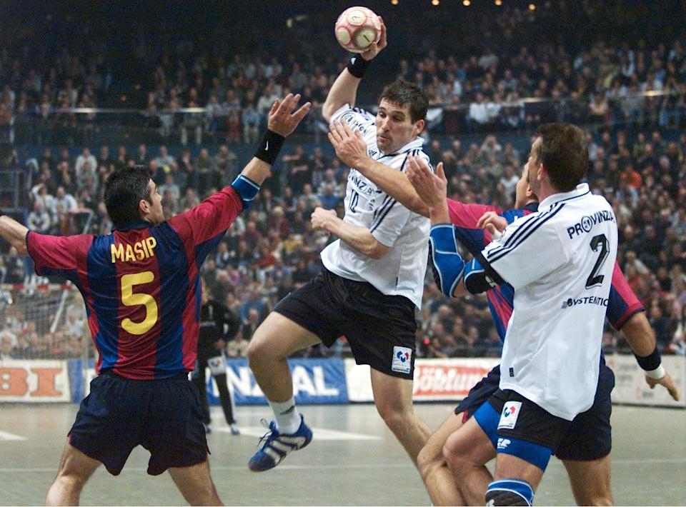
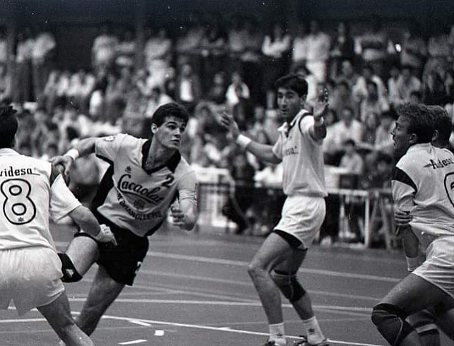

Inicio
Partidos

El secretario técnico del balonmano blaugrana, Enric Masip, confirmó el acuerdo con Siarhei Rutenka y aseguró que es un jugador con "carácter" y "decisivo", lo que le hace ser "uno de los mejores jugadores del mundo", con lo que la plantilla blaugrana se refuerza y, a la vez, debilita a un rival como es el Ciudad Real.Fue internacional absoluto y capitán de la selección española durante 14 años (1989–2003), con la que disputó 205 partidos y anotó 656 goles, siendo el décimo y quinto respectivamente, con más partidos y goles de la historia del combinado nacional.9 Disputó con España dos Juegos Olímpicos, seis Mundiales y tres Europeos. Hizo su debut con la selección absoluta el 27 de junio de 1989, con 18 años de edad, en el «Torneo Internacional Tres Naciones» que se disputó en Pamplona.1011 Su última participación en una gran competición con la selección española, se produjo en el Mundial 2003 de Portugal, donde capitaneó a la selección nacional que concluyó en cuarta posición, tras perder tras dos prórrogas en semifinales contra Croacia. Fue elegido mejor central del campeonato. 1213 Participaciones en fases finales Mundial de Checoslovaquia 1990: quinto. Juegos Olímpicos de Barcelona 1992: quinto. Mundial de Suecia 1993: quinto. Europeo de Portugal 1994: quinto. Europeo de España 1996: subcampeón. Mundial de Japón 1997: séptimo.
Masip jugó 205 partidos con la Selección de balonmano de España, y participó en 12 grandes eventos internacionales. El jugador es una pieza clave en el éxito del club manchego. A sus 27 años, Rutenka es considerado uno de los mejores jugadores del mundo del balonmano. Esta última temporada, en que los de Dujshebaev se han proclamado campeones de Liga y 'Champions', la participación del lateral, que ocupó en muchos momentos el puesto de pivote, ha vuelto a ser clave. Segundo máximo goleador de su equipo en la competición Asobal, con 94 goles y un acierto del 78,9 por ciento, en Europa también ha brillado con luz propia, con 63 dianas. Y eso que esta última temporada ha actuado más de pivote que de primera línea, su posición natural.
